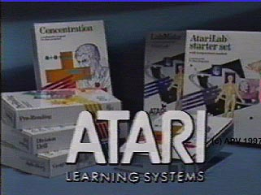
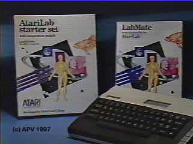

The AtariLab
Atari
was eager to get a better foothold into the educational market with its
new XL series of computers. In the past Atari with its 400/800
line of computers, Atari made some small in-roads into the educational
market by supplying schools with free 30-day trails of Atari computers
in hopes that once a classroom got to use an Atari computer the teachers
would not be able to let the computer go back after 30 days.
Atari also had a Black/Blue/Silver painted fleet of Atari Vans which went
around the California state to various schools with Atari computers to
gain interest in their use in schools. Atari also gave
away Atari 800 computers to College freshman who's grades were high as
an additional incentive.
Well it was time for Atari
to go back to school again, this time armed with all sorts of sensors,
experiments and learning guides. It was time for AtariLab,
a series of educational modules which connected any Atari 8-bit computer
system to allow students to perform various science experiements.
Of course Apple kept a stronghold on the educational market and Atari,
even though it was able to chip away a little bit at the fortress that
Apple built, it never caught on the way Atari had truly hoped.
 